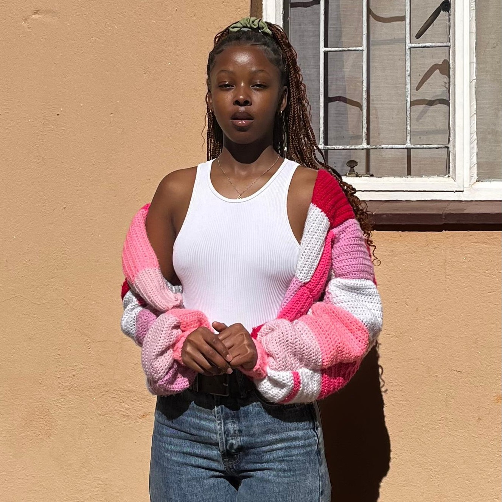
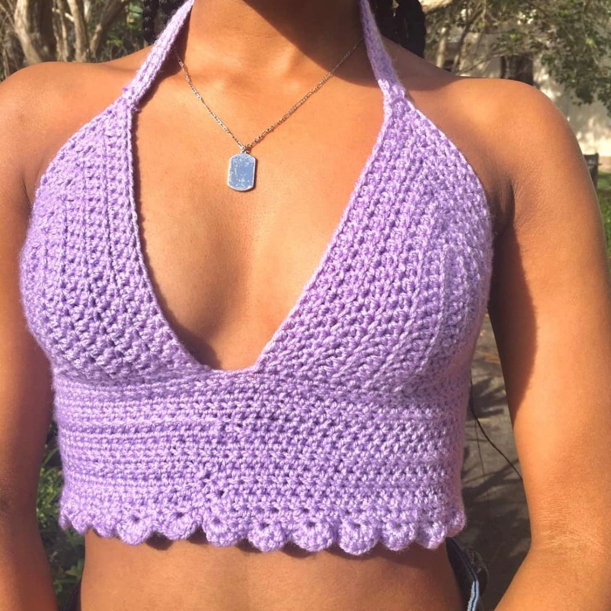
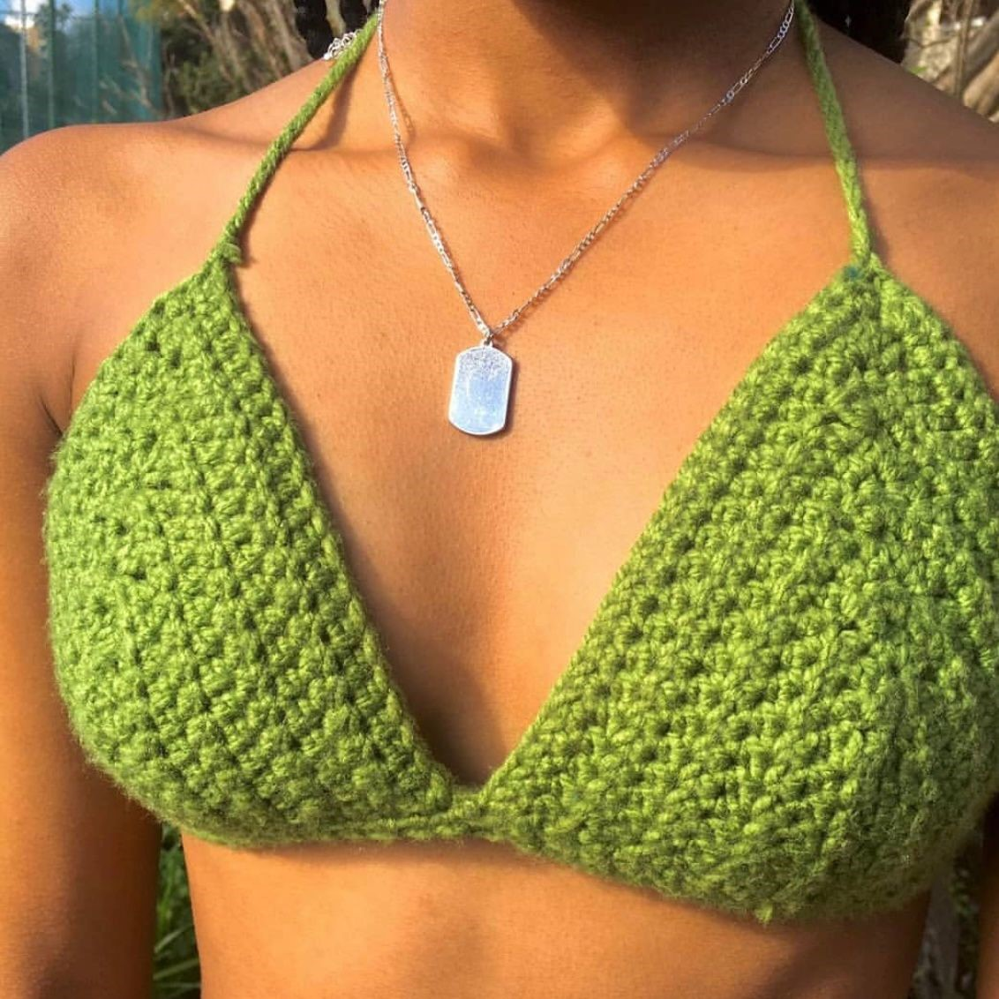
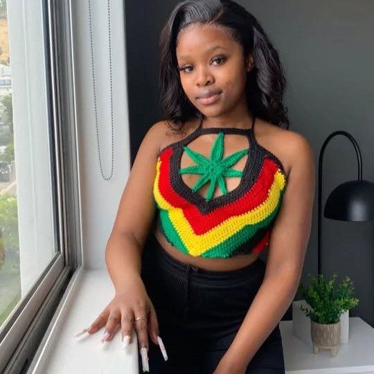
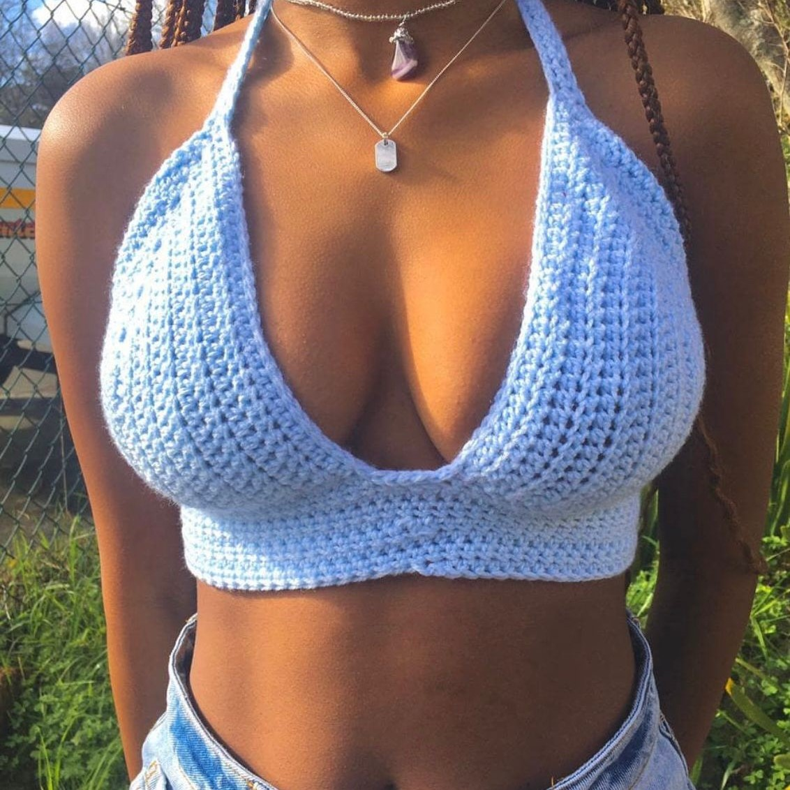
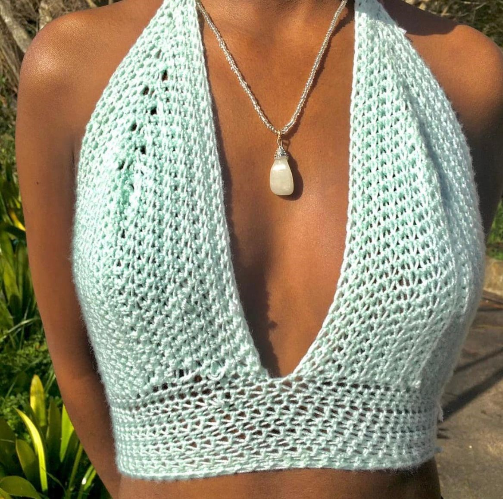

Our Work
This is a curated collection of our handcrafted crochet creations — each piece made with care, creativity, and attention to detail. From stylish clothing and accessories to unique custom orders, our work showcases the passion we have for the art of crochet. We take pride in every stitch, and we’re excited to share these special pieces with you.







Unique. Elegant. Cozy.